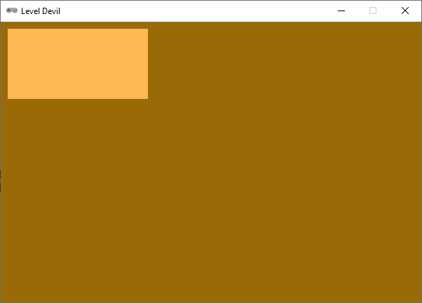
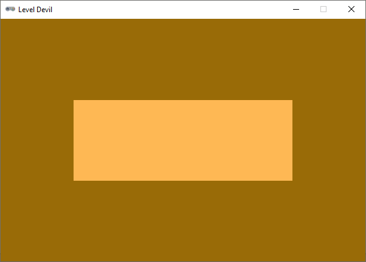
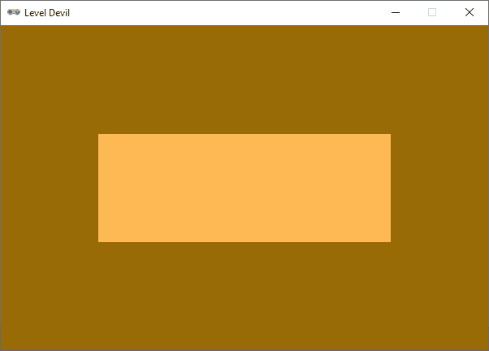

Kamer en valkuilen#
In dit deel programmeren we de kamer en de valkuilen van het eerste level van onze versie van Level Devil. We maken gebruik van het Rect object om rechthoeken te definiëren die de kamer en de valkuilen voorstellen. De kamer is een statische rechthoek die altijd zichtbaar is, terwijl de valkuilen dynamische rechthoeken zijn die in hoogte toenemen wanneer ze actief worden. We gebruiken een lijst om de valkuilen op te slaan en een set om bij te houden welke valkuilen actief zijn.
Rectangles#
De kamer en de valkuilen in onze versie van Level Devil zijn rechthoeken. Voor het werken met rechthoeken gebruik je in Pygame Zero Rect objecten. Uitgebreide informatie over deze objecten vind je in de Pygame documentatie.
Breid de code als volgt uit:
6COLOR_BACKGROUND = (153, 107, 7)
7COLOR_ROOM = (254, 184, 84)
8
9room_rect = Rect((10, 10), (200, 100))
10
11def draw():
12 screen.fill(COLOR_BACKGROUND)
13 screen.draw.filled_rect(room_rect, COLOR_ROOM)
14
15def update():
16 pass
In regel 9 maken we een variabele room_rect aan die een Rect object bevat. Om een Rect object te maken, geef je eerst de coördinaten van de linkerbovenhoek van de rechthoek op als een tuple (x, y) en daarna de breedte en hoogte van de rechthoek als een tweede tuple (width, height). In dit geval maken we dus een rechthoek met een breedte van 200 en een hoogte van 100, waarvan de linkerbovenhoek zich bevindt op positie (10, 10).
In regel 13 in de functie draw() tekenen we de rechthoek met de methode screen.draw.filled_rect(), die een Rect object en een kleur als argumenten verwacht.

De huidige positie en afmetingen van room_rect zijn nog niet goed. Het is mooier als de kamer wat groter is en zich meer in het midden van het venster bevindt. Echter, dit kan natuurlijk per level verschillen. Daarom gaan we een aparte functie setup_level() maken waarin we de positie en afmetingen van de kamer kunnen aanpassen. Wijzig de code als volgt:
6COLOR_BACKGROUND = (153, 107, 7)
7COLOR_ROOM = (254, 184, 84)
8
9room_rect = Rect((0, 0), (0, 0))
10
11def setup_level(level):
12 if level == 1:
13 room_rect.width = int(3/5 * WIDTH)
14 room_rect.height = int(1/3 * HEIGHT)
15 room_rect.center = (WIDTH / 2, HEIGHT / 2)
16
17def draw():
18 screen.fill(COLOR_BACKGROUND)
19 screen.draw.filled_rect(room_rect, COLOR_ROOM)
20
21def update():
22 pass
23
24# MAIN PROGRAM
25setup_level(1)
Regel 9 is gewijzigd zodat room_rect nu een rechthoek is met een breedte en hoogte van 0. In de functie setup_level() worden de breedte en hoogte van de rechthoek aangepast op basis van de waarde van het argument level. Vooralsnog is er slechts één level, maar in de toekomst kunnen we hier eenvoudig meer levels toevoegen. De breedte van de kamer wordt ingesteld op 3/5 van de breedte van het venster en de hoogte op 1/3 van de hoogte van het venster. De positie van de kamer wordt ingesteld op het midden van het venster.
Denk eraan dat de functie setup_level() onderaan, in het hoofdprogramma, moet worden aangeroepen om de instellingen daadwerkelijk toe te passen.

Een lijst met rectangles#
Elk level heeft slechts één kamer, maar er kunnen meerdere valkuilen zijn. Daarom gaan we een lijst maken waarin we de rechthoeken van de valkuilen kunnen opslaan. Voeg de volgende code toe:
9room_rect = Rect((0, 0), (0, 0))
10trap_rects = []
11
12def setup_level(level):
13 if level == 1:
14 room_rect.width = int(3/5 * WIDTH)
15 room_rect.height = int(1/3 * HEIGHT)
16 room_rect.center = (WIDTH / 2, HEIGHT / 2)
17 trap_rect = Rect((room_rect.left + 100, room_rect.bottom), (50, 0))
18 trap_rects.append(trap_rect)
19 trap_rect = Rect((room_rect.left + 200, room_rect.bottom), (50, 0))
20 trap_rects.append(trap_rect)
21
22def draw():
23 screen.fill(COLOR_BACKGROUND)
24 screen.draw.filled_rect(room_rect, COLOR_ROOM)
25 for trap_rect in trap_rects:
26 screen.draw.filled_rect(trap_rect, COLOR_ROOM)
In de regels 17 t/m 20 worden twee valkuilen toegevoegd aan de lijst trap_rects. Valt je iets op aan de afmetingen van de valkuilen? Ze hebben een breedte van 50, maar een hoogte van 0. Dat klopt, want bij aanvang van het level moeten de valkuilen nog niet zichtbaar zijn.
Wanneer de speler een valkuil nadert, moet die valkuil ‘actief’ worden. Om bij te houden welke valkuilen actief zijn, maken we een set aan met de naam active_traps:
9room_rect = Rect((0, 0), (0, 0))
10trap_rects = []
11active_traps = set()
Net als een list is een set een datastructuur die meerdere waarden kan bevatten. In tegenstelling tot een lijst kunnen de waarden in een set echter niet meerdere keren voorkomen en is er geen volgorde. In dit geval willen we alleen bijhouden welke valkuilen actief zijn, dus we hebben geen behoefte aan een volgorde of aan dubbele waarden. Daarom is een set hier een betere keuze dan een lijst.
In de set active_traps zullen we de indices van de actieve valkuilen opslaan. De eerste valkuil in de lijst trap_rects heeft index 0, de tweede valkuil heeft index 1, enzovoort. Wanneer een valkuil actief wordt, voegen we de bijbehorende index toe aan de set. Vervolgens kunnen we in de functie update() controleren welke valkuilen actief zijn en de hoogte van die valkuilen laten toenemen totdat ze de grond hebben bereikt.
We programmeren nu eerst de code in de functie update(). Verwijder het keyword pass uit de functie update() en vervang het door de volgende code:
29def update():
30 for index, trap_rect in enumerate(trap_rects):
31 if index in active_traps:
32 if trap_rect.height < HEIGHT - room_rect.bottom:
33 trap_rect.height += 2
34 print(trap_rect.height)
In regel 30 wordt de enumerate() functie gebruikt om zowel de index als het valkuil rechthoek object te krijgen bij het itereren door de lijst van valkuilen (zie ook de uitleg hier). In regel 31 wordt gecontroleerd of de index van de valkuil in de set van actieve valkuilen zit. Als dat het geval is, wordt de hoogte van die valkuil verhoogd totdat deze de grond heeft bereikt. Het tijdelijke print statement in regel 34 stelt je als programmeur in staat om te checken hoe de hoogte van de valkuil verandert.
We hebben nog geen speler geprogrammeerd die valkuilen kan activeren. Om de nieuwe functionaliteit toch te kunnen testen, gaan we de valkuilen tijdelijk handmatig activeren via de on_key_down() functie. Voeg de volgende code toe boven de draw() functie:
23def on_key_down(key):
24 if key == keys.K_0:
25 active_traps.add(0)
26 elif key == keys.K_1:
27 active_traps.add(1)
Wanneer je nu op de 0 of 1 toets drukt, wordt de bijbehorende valkuil actief: de index van de valkuil wordt met de add() methode toegevoegd aan de set active_traps. Probeer het maar eens uit. In de shell van Mu editor kun je dankzij het print statement in de update() functie tevens zien hoe de hoogte van de valkuilen toeneemt totdat ze de onderrand van het venster hebben bereikt.
